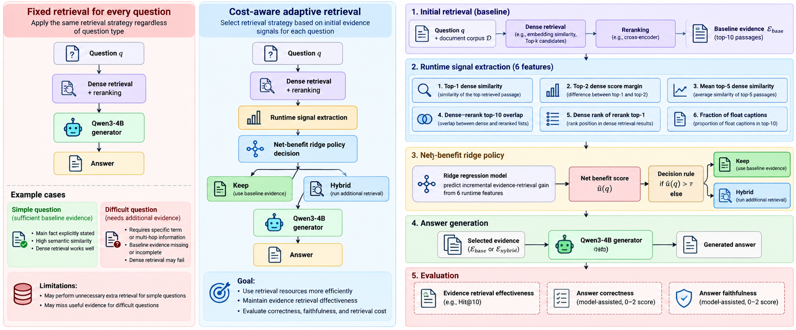
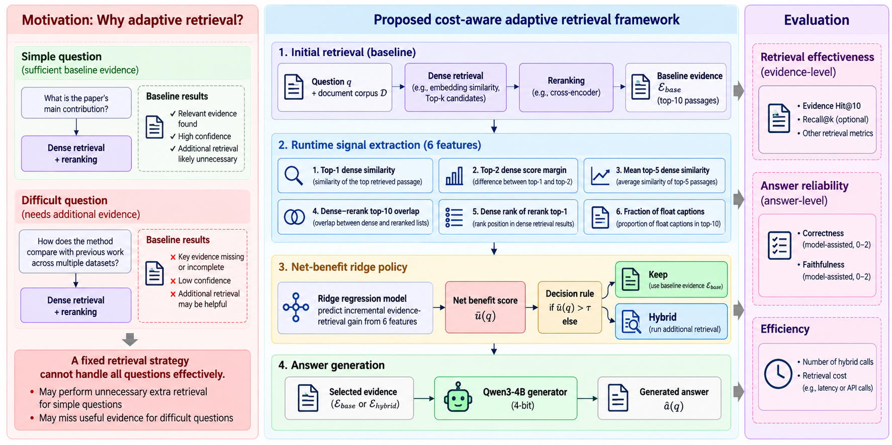

SHARE
Is adding a second retrieval pass to RAG worth it? This paper first gets evidence with vector retrieval plus reranking, then has a small linear model read the scores left by that pass, such as how high the top-1 similarity is, how far it sits above the second result, and how much the top ten overlap before and after reranking. From those it predicts whether switching to hybrid BM25-plus-vector retrieval would find more evidence, and it switches only when the predicted gain is large enough. On 60 papers from QASPER (a QA dataset over research papers) that were never used in training, it switched only 24.5% of questions to hybrid retrieval and matched the evidence hit rate of always using hybrid retrieval, 78.70% for both. Yet when a 4B model generated answers from that evidence, neither correctness nor faithfulness improved. Finding evidence more cheaply does not make answers more reliable, and gains in retrieval metrics cannot be read as gains in answer quality.
RAG and search teams should spend ten minutes on it, but not for the method. The method is plain, a six-feature ridge regression plus a threshold, and the author makes no claim of algorithmic novelty. The reason to read it is that it measures separately three things that are often lumped together: finding the right evidence, deciding when to pay for one more retrieval pass, and making answers more correct and better grounded. The first two hold in its experiments; the third does not. The study is small, single-author, and every confidence interval crosses zero, so I treat it as a carefully run counterexample, not a recipe to copy.
What problem is it actually solving?
Picture a research-paper QA assistant: a user asks about one paper, the system searches passages inside that paper, and an LLM answers. The three questions below (illustrative) all go through the same baseline retrieval:
| Question (illustrative) | What baseline retrieval looks like | What one more hybrid pass would do |
|---|---|---|
| What is the paper's main contribution? | Top-1 similarity is high and the top results are well separated | Most likely finds the same passages; a wasted retrieval |
| How much did BLEU improve in Table 3? | Top-1 score is low and the top results are bunched together | BM25 can match "BLEU" and "Table 3" literally and may rescue it |
| Which datasets did the authors use? | One passage hits, but reranking changes the top result | New candidates may push the hit out of the top 10, making things worse |

A fixed strategy has only two options. Running vector retrieval alone misses the second kind of question. Adding hybrid retrieval to every question wastes money on the first kind and may hurt the third. The paper asks whether you can tell, from the baseline retrieval result alone, which questions deserve the extra pass, and if so, whether answers get better.
The overall pipeline

| Step | What it does | Output |
|---|---|---|
| 1. Baseline retrieval (Keep) | MiniLM vector retrieval takes the top 30, a cross-encoder reranks them, the top 10 are kept | Baseline evidence and a set of retrieval scores |
| 2. Features | Compute 6 numbers from step 1's scores and ranks only | A 6-dimensional vector |
| 3. Gain prediction | Ridge regression outputs how much the hit outcome would improve with hybrid retrieval | One predicted value |
| 4. Decision | Run hybrid retrieval (Hybrid) if the prediction is at least 0.0310, otherwise keep the baseline evidence | The final top 10 evidence |
| 5. Generation | Qwen3-4B answers from these 10 units, or replies Insufficient evidence. when support is lacking | The answer |
The key division of labour: baseline retrieval runs for every question; the model only decides whether to run one more pass. Now the parts.
What are the two retrieval arms?
Both arms search only inside the paper being asked about. Each paper is split into three kinds of small units: body paragraphs, section headings, and figure or table captions. The numbers inside figures and tables are not available, only the caption text, which matters later.
The Keep arm encodes the question and every unit with all-MiniLM-L6-v2, takes the top 30 by cosine similarity, reranks them with the ms-marco MiniLM cross-encoder, and keeps the top 10. The Hybrid arm adds a BM25 lexical ranking, then merges the vector ranking and the BM25 ranking into one list with RRF, again takes 30 candidates, reranks with the same cross-encoder, and keeps the top 10. The RRF constant is the usual 60.
Note that Hybrid does not append a few units after Keep's 10; it produces a complete top 10 of its own. New candidates push old ones out, so switching can rescue a question and can also lose evidence that was already hit.
What exactly does the model predict?
The training target is not whether baseline retrieval failed, but whether switching to hybrid retrieval makes the hit outcome better or worse. For each question, check whether each arm's top 10 contains at least one annotated evidence unit, scoring 1 if yes and 0 if no; subtract the two to get Δ. A positive Δ is a rescue, a negative one is a harm, and zero means the arms tie.
Why not predict baseline failure directly? Because when the baseline fails, hybrid retrieval often cannot rescue it either, and when the baseline succeeds, hybrid retrieval may still lose the hit. Predicting the difference is what corresponds to whether switching is worth it. The price is extreme label imbalance: of 690 development questions, only 16 were rescues and 7 were harms, and the rest tied, so the model has very few positive examples to learn from.
All six input features come from the Keep arm. Three describe vector similarity: the top-1 similarity, the gap between the first and second, and the mean of the top five. Two compare the vector ranking with the reranked result: how many of their top ten overlap, and where the reranked first result sits in the vector ranking (11 if outside the top ten). The last is the share of figure or table captions among the ten units the Keep arm finally returns. For example, a low top-1 similarity, bunched top results, or reranking lifting a passage from far down the vector ranking to first place all mean the vector retrieval may have missed, which is when switching could help.
The model is a ridge regression on standardized features, with an L2 coefficient of 20. Because the features come only from the Keep arm, the Keep arm must run in full before the decision, so the policy saves only unnecessary Hybrid calls and none of the baseline retrieval or reranking cost. The paper does not say whether the Hybrid arm reuses the vector ranking and rerank scores already computed by Keep, so how much one Hybrid trigger actually adds cannot be worked out from the paper. Hoot says

- Paid before the decision: vector retrieval and reranking run for every question, because the six features are computed from their output.
- Added on trigger: BM25, RRF fusion and another rerank. The paper does not say whether this reuses the vector ranking and rerank scores from the left, so the real extra cost of one trigger cannot be worked out from the paper.
The left column runs for every question; the right column runs only when the prediction clears the threshold. The right column does not append to the baseline evidence; it produces a new top 10 that replaces it. Source: paper §3 (the two arms), §4 (all six features come from the Keep arm; Hybrid runs only when Δ̂ clears the threshold), Figure 2 caption (both arms computed offline; only the routed one is needed in operation)
How is the threshold set, and how is cost counted?
The author charges an abstract cost of 0.02 per Hybrid trigger, and a policy's utility = hit (0 or 1) − 0.02 × (whether it triggered). A hand calculation (illustrative): with 25 triggers and 79 hits over 100 questions, utility = 0.79 − 0.02 × 0.25 = 0.785.
The threshold 0.0310 is not simply 0.02; it was swept on the development set. Cross-validation grouped by paper gives a prediction for every development question, and the threshold with the highest mean utility is chosen, preferring fewer triggers on ties. The model and threshold were frozen before the held-out annotations were opened and were not tuned afterwards. A question predicted at 0.05 switches arms, and one predicted at 0.01 keeps the baseline (illustrative).
The 0.02 cost is a unit, not measured milliseconds, tokens or money. The author stresses this repeatedly.
Results: evidence found more cheaply, answers no better
The held-out set is 60 papers unseen in training, with 188 questions, 169 of which have annotated evidence that can be aligned to units and are used for hit rates.
| Policy | Hit@10 | Hybrid triggers | Utility |
|---|---|---|---|
| Always Keep | 76.92% | 0 / 188 | 0.7692 |
| Always Hybrid | 78.70% | 188 / 188 | 0.7670 |
| Frozen adaptive policy | 78.70% | 46 / 188 | 0.7819 |
Relative to the baseline, always-Hybrid rescues 5 questions and loses 2; the adaptive policy rescues 4 and loses 1, a net gain of 3, the same as always-Hybrid, while running 142 fewer hybrid retrievals. This shows that the six scores do carry a signal about whether to switch, enough to filter out most useless triggers.
But the advantage does not hold up statistically. With a bootstrap over papers, the 95% interval for adaptive minus always-Hybrid utility is roughly −0.0021 to 0.0328, and the interval against the baseline also includes zero. Because the net difference is only 3 of 169 questions, the sample is too small to show the adaptive policy is really better.
Answers get two scores, each with a maximum of 2, so averages closer to 2 in the table below are better. Correctness is checked against QASPER's reference answers: a wrong or unsupported answer, or an unjustified abstention, scores 0; a partly correct or materially incomplete answer scores 1; a correct answer scores 2. Faithfulness only checks whether the answer's claims are supported by the 10 evidence units the generator saw at the time: unsupported 0, partly supported 1, supported 2; a pure abstention has no claims to check and gets no faithfulness score.
The two scores cover different numbers of questions. Correctness compares only questions scored under all three policies, dropping questions whose reference answers conflict and remain unresolved, which leaves 181; faithfulness further drops questions where any policy abstained, which leaves 128.
| Policy | Correctness (181 questions) | Faithfulness (128 questions) |
|---|---|---|
| Always Keep | 1.127 | 1.844 |
| Always Hybrid | 1.133 | 1.813 |
| Frozen adaptive policy | 1.127 | 1.820 |
Adaptive and baseline correctness are identical, a difference of 0.000 with an interval of roughly −0.029 to 0.024, and faithfulness is slightly lower. More telling: before assisted manual review, scores from the model judge alone showed a small positive advantage for the adaptive policy, which disappeared after review. A gap this small flips with the way it is judged.
Why did more evidence hits not lead to better answers? The paper gives several reasons. Hit@10 only requires one annotated evidence unit in the top 10, while an answer may need several; a generator with enough evidence can still answer wrongly or abstain; a caption can be hit while the number the answer needs is not in the caption. I would add an order-of-magnitude reason: a net rescue of 3 questions is under 2% of 169, so even if each went from fully wrong to fully right, the change in mean correctness would be lost in judge error.
Limitations as I see them
First, the sample is too small. The held-out set has only 60 papers and 169 evaluable questions, and the training labels contain only 16 rescues and 7 harms, so the ridge regression is fitting a pile of zeros; the author also says its predictions may be weakly identified.
Second, answer-quality scoring is not reliable enough. The judge and the generator are from the same Qwen family, only part of the labels got assisted review, and there was no independent blind human evaluation. The conclusion moving from a slight advantage to no difference before and after review shows that the scoring itself drives the conclusion.
Third, cost was not measured. The 0.02 is an abstract unit; the paper only records about 1,814 seconds of total generation time for 289 distinct prompts, with no per-policy retrieval latency. Also, retrieval happens inside a single paper, and the data come from a part of QASPER's official training split, with no validation on the official test set or a second dataset.
How a search or RAG team could try this
- First run both arms offline and count how often each rescues or harms. If rescues are under 3%, routing barely matters; do not build it yet.
- Use only scores the baseline retrieval already produces as features, train a linear model to predict the hit difference between arms, and sweep the threshold against real cost. At this step replace the abstract unit with measured latency or call fees.
- When deciding on launch, watch both retrieval hit rate and answer metrics. Answer metrics need independent human spot checks, because this paper shows answer scores may not move even when retrieval hits a few more questions.
- If routing's main value is saving money, account for it in saved calls and latency; answers did not improve in this paper's experiment, so whether it raises answer quality has to be confirmed with your own answer evaluation.
Verdict
Retrieval metrics and answer quality are two different things. In this experiment, routing saved three quarters of the hybrid retrievals but brought no confirmed improvement in answers. The paper's value lies in laying this out with a properly frozen experiment.
| Dimension | Assessment |
|---|---|
| Problem importance | Medium-high. When an extra retrieval pass is worth it is a calculation every RAG system has to make |
| Method novelty | Low. A six-feature ridge regression plus a threshold, and the author claims no algorithmic novelty |
| Evidence | Weak. 60 papers, every interval crosses zero, and answer scores lack independent human validation |
| Engineering cost | Low. Features come from existing retrieval scores and the model is linear |
| Worth trying | Worth doing the offline count; check the rescue rate before deciding on routing |
| Where it fits | RAG or search systems with several retrieval options where the expensive one helps only a few queries |
How did this read for you?
Hoot made a note. Thanks for the feedback.
One tap, no sign-in; tap again to undo. Only anonymous counts are kept, never who you are.
Discussion
Add experiment details, reproduction notes or a different take. Requires a GitHub sign-in.
Loading the discussion…